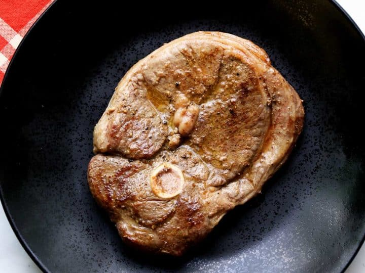

Oven-Baked Lamb Steak Recipe

Melt in Your Mouth Lamb Steak
Lamb is one of those meats that not many people try. I believe it is a
mixture between price and the unknown. It's unfortunate because lamb can
be an extremely flavorful and fulfilling meat if prepared properly.
Hopefully this recipe can fix the unknown part for you; opening up a new
world of tastes and flavors you didn't know about! This is a quickc simple
recipe for pan-seared lamb steak. Now lets get started:
Ingrediants
- 1 8oz. cut of Lamb Steak(leg)
- Rosemary
- Garlic Powder
- Onion Powder
- Olive Oil
Steps
-
Pre-heat oven to 275℉
-
Take all of your seasonings and place them together in a small
bowl.
Doing this ahead of time will save you from having to constantly clean
your hands after touching the meat before grabbing a new container of
seasoning to rub in.
-
Start by pulling off the membrane.
If you've cooked ribs before you know they have a thin membrane on the
inside of the ribs. If not, flip the ribs over and find a place close to
the edge of the ribs and start picking at it. You will find a very thin
piece of membrance that will start peeling away. Pull this off the ribs
and throw it away.
-
With your hands, rub the seasoning mixture all over both faces of the
ribs.
Make sure you thouroughly coat the ribs in the mixture, rubbing it into
the meat for maximum flavor. Don't forget the sides!
-
Lay out two sheets of aluminium foil. Place the second
sheet over the first, halfway down.
-
Place your ribs in the center of the sheets of foil.
Take the bottom and top of the sheets of foil and bring them above the
ribs. Roll them both together until the ribs are unclosed. Do it tight,
but not tight enough to rip the foil. Roll the side inwards and set it
on the baking sheet.
-
Place the sheet in the oven and set a timer for 2 hours.
The time will vary depending on your oven so set it for 2 hours and then
check. If the ribs need more time, set another timer for 20 mins.
-
At the final 5 minute mark pull the ribs out. Take out
the ribs a lather a generous about of BBQ suace on the top. Place your
oven on broil(500℉) and set a timer for 5 mins.
- Finally take out the ribs and plate!
Return to Main Page